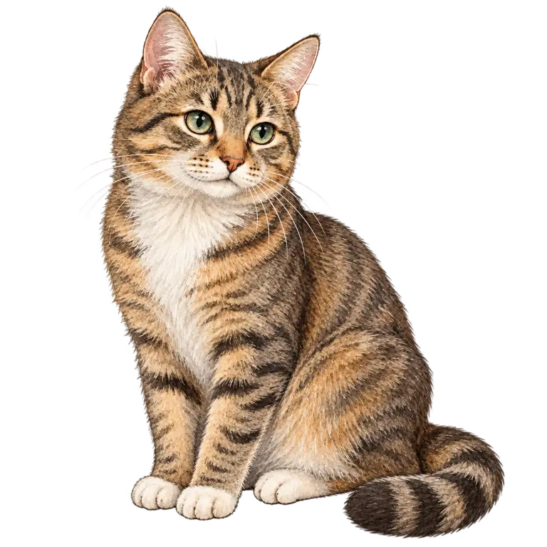

Kde je to?
in = uvnitř · on = na povrchu · under = pod · next to = vedle · behind = za · in front of = před
Pro 4.–5. ročník: in, on, at, under, next to a předložky u času.
Předložka je malé slovo, které řekne, kde něco je, nebo kdy se něco děje. V angličtině stojí před podstatným jménem stejně jako v češtině: The cat is under the table. – Kočka je pod stolem.
in = uvnitř · on = na povrchu · under = pod · next to = vedle · behind = za · in front of = před
in – měsíce, roky, roční období: in July, in 2026, in winter
on – dny a data: on Monday, on my birthday, on 5th May
at – přesný čas: at 7 o'clock, at noon, at Christmas
in the morning, in the afternoon, in the evening,
ale at night.
Když přidáš den: on Friday evening.
U času pomáhá představa od velkého k malému: dlouhé období (rok, měsíc) má in, jeden den on, přesný okamžik na hodinách at.
Pozor na chybu z češtiny: „na stole“ je on the table, ale „v pondělí“ není in Monday ✗ – správně on Monday. V americké angličtině se datum často píše on May 5th.
Doplň předložku: ___ Friday evening
✅ on Friday evening – v pátek večer.
Přetáhni kočku k nejbližšímu místu, nebo vyber předložku tlačítkem.

U místa: in = uvnitř, on = na povrchu, under = pod, next to = vedle, behind = za, in front of = před.